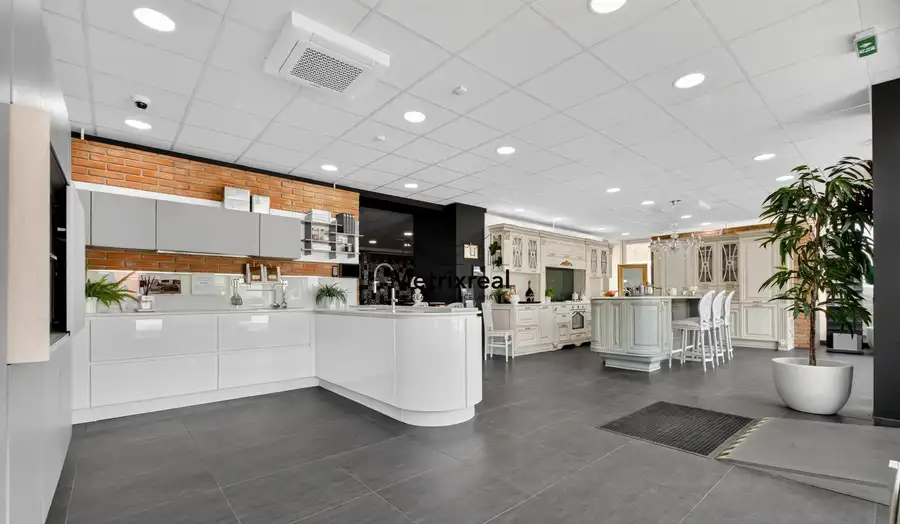
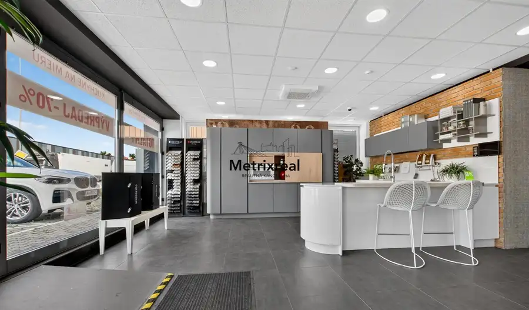
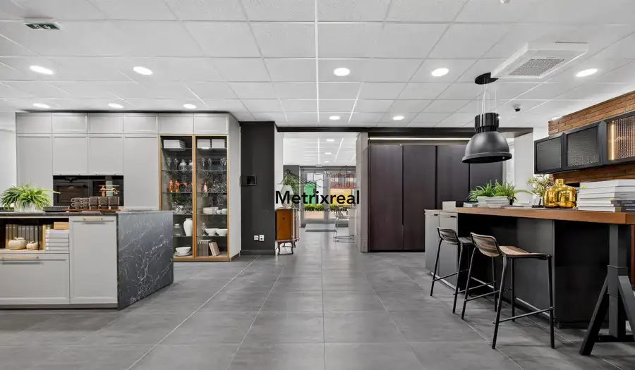
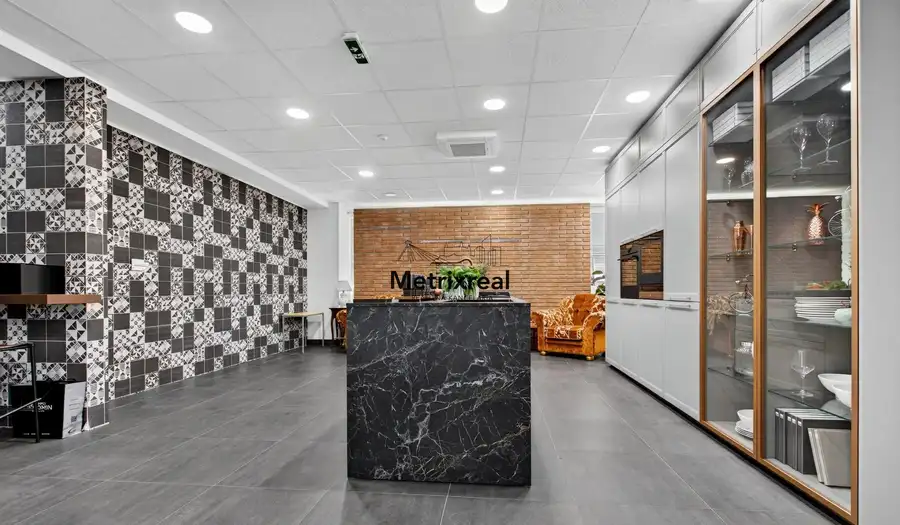
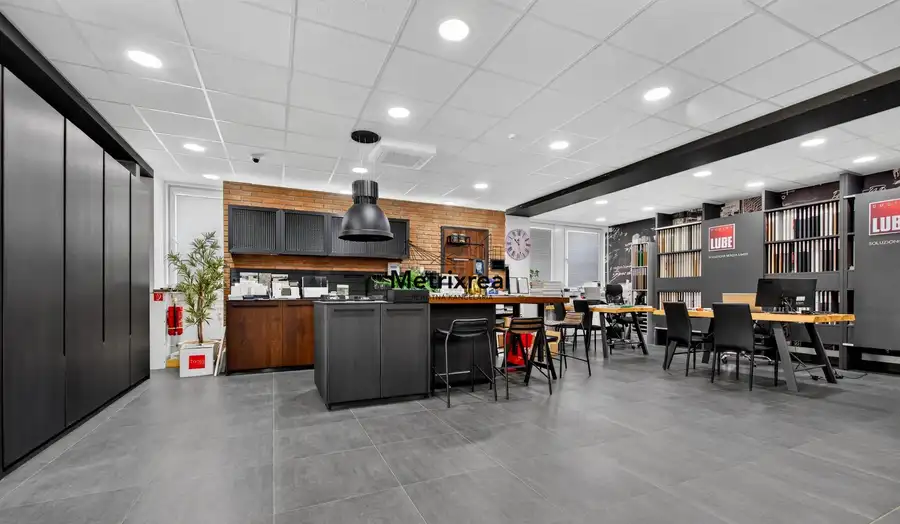
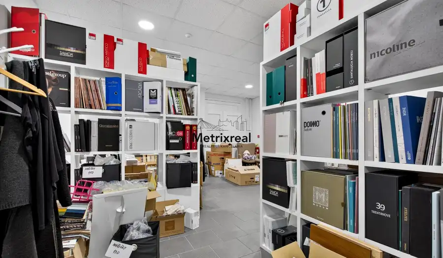

PESTOVATEĽSKÁ | RUŽINOV | Reprezentatívny obchodný priestor 238 m² na prízemí s výkladmi pri IKEA a Avione | Kompletná rekonštrukcia | Bez provízie
Ružinov, Bratislava







- Plocha238 m²
- StavKompletná rekonštrukcia
- VlastníctvoOsobné
- Energetická triedaB
O nehnuteľnosti
Realitná kancelária Metrixreal Vám na základe poverenia majiteľa ponúka na predaj lukratívny, kompletne zrekonštruovaný obchodný priestor s úžitkovou plochou 238 m² (celková výmera 276 m² vrátane add-on faktoru budovy), situovaný na prízemí polyfunkčného objektu na mimoriadne frekventovanej Pestovateľskej ulici v Bratislave – mestská časť Ružinov.Priestor disponuje veľkoformátovými výkladmi orientovanými priamo do ulice, bezbariérovým prístupom z terénu a prvotriednou viditeľnosťou z hlavnej dopravnej komunikácie. Vďaka modernému štandardu po kompletnej obnove, vlastnému zázemiu a možnosti odkúpenia parkovacích miest priamo pred vchodom je ideálny ako showroom, predajňa, klientske centrum, špecializované zdravotnícke zariadenie, služby alebo reprezentatívne sídlo spoločnosti. Nehnuteľnosť zároveň predstavuje mimoriadne stabilnú investičnú príležitosť s vysokým potenciálom dlhodobého zhodnotenia a výnosu z prenájmu.ZÁKLADNÉ PARAMETRE:Úžitková plocha priestoru: 238,00 m²Celková výmera (vrátane add-on faktoru budovy): 276,00 m²Umiestnenie v objekte: Prízemie (priamy bezbariérový vstup priamo z parkoviska / ulice)Technický stav: Kompletná rekonštrukcia – moderný štandard pripravený na okamžité využitie bez ďalších stavebných úpravPresklenie: Veľké presklené výklady zaručujúce bohaté denné svetlo a výbornú prezentáciu produktov a značkyVlastné sociálne a personálne zázemie: Plne vybavená kuchynka a toalety situované priamo v priestoreParkovanie: Možnosť zakúpenia vyhradených parkovacích státí priamo pred objektomHLAVNÉ BENEFITY A POTENCIÁL:Maximálna marketingová viditeľnosť: Budova je situovaná na mimoriadne frekventovanom ťahu, kde je prevádzka denne vystavená tisíckam prechádzajúcich áut a zákazníkov.Všestranná dispozícia: Otvorený a presvetlený priestor ponúka flexibilné členenie na prezentačnú showroom časť, klientske zóny, konzultačné boxy či administratívno-skladové zázemie.Investičná likvidita: Prízemné obchodné priestory s vlastnými výkladmi a parkovaním v tejto lokalite patria medzi najvyhľadávanejšie komerčné aktíva na bratislavskom trhu.LOKALITA A DOSTUPNOSŤ:Pestovateľská ulica patrí k najdôležitejším komerčno-nákupným uzlom hlavného mesta:Obchodné zóny v bezprostrednom susedstve: Objekt sa nachádza priamo naproti obchodnému domu IKEA, v tesnej blízkosti Avion Shopping Parku, KORZO a Hornbachu.Dopravné napojenie: Okamžitý priamy nájazd na diaľničný obchvat D1 všetkými smermi (Trnava, Nitra, Brno, Viedeň, Budapešť) a bezproblémový dojazd do centra mesta.Blízkosť letiska: Letisko M. R. Štefánika vzdialené len 3 minúty jazdy autom.MHD spojenie: Zastávky autobusov v pešej dostupnosti zaisťujú komfortnú dostupnosť pre zamestnancov aj klientov.CENA A PODMIENKY PREDAJA:Kúpna cena priestoru: 850 080 € bez DPH (resp. cena na vyžiadanie v RK)Parkovacie státie: 10 000,00 € bez DPH / parkovacie miesto priamo pred budovouFinancovanie: Možnosť prefinancovania formou investičného / podnikateľského úveruV cene je zahrnutý kompletný právny a transakčný servis zastrešený advokátskou kanceláriou, autorizácia zmlúv, úhrada správnych poplatkov spojených s prevodom vlastníckych práv na katastri a protokolárne odovzdanie nehnuteľnosti. Sme členom Realitnej únie SR.KONTAKT PRE OBHLIADKU:Miroslav Kadnár – senior realitný maklér (v realitách od roku 2016)Tel.: 0951 778 117E-mail: kadnar@metrixreal.skRealitná kancelária: Metrixreal s.r.o.E-mail: info@metrixreal.sk / Tel. č. +421 951778117
Parametre
- Doprava
- Diaľkový autobus, Diaľnica, Letisko, Cesta, MHD, Trolejbus
- Druh
- Obchodné priestory
- Dátum zverejnenia
- 23. 09. 2026
- Energetický certifikát budovy
- B
- Počet vonkajších parkovacích miest
- 1
- Rok poslednej rekonštrukcie
- 2026
- Rok výstavby
- 1995
- Stav nehnuteľnosti
- Kompletná rekonštrukcia
- Typ
- Predaj
- Typ konštrukcie
- Skeletová
- Vlastníctvo
- Osobné
- Vybavenie
- Vonkajšie parkovacie miesto
- Úžitková plocha
- 238 m²
Kde to je


Mohlo by Vás zaujímať
 Komerčné priestoryNové
751 291 €PESTOVATEĽSKÁ | RUŽINOV | Investičný kancelársky trakt 285 m² (celé 2. NP) s fungujúcimi nájomcami pri IKEA a Avione | Výnos od 1. dňa | Bez provízie
Ružinov, Bratislava
285.12 m²
Komerčné priestoryNové
751 291 €PESTOVATEĽSKÁ | RUŽINOV | Investičný kancelársky trakt 285 m² (celé 2. NP) s fungujúcimi nájomcami pri IKEA a Avione | Výnos od 1. dňa | Bez provízie
Ružinov, Bratislava
285.12 m²
 DomNové
275 000 €Samostatný RD s garážou, slnečným pozemkom a projektom rekonštrukcie – Krajinská ul., Podunajské Biskupice
Podunajské Biskupice, Bratislava
122 m²
DomNové
275 000 €Samostatný RD s garážou, slnečným pozemkom a projektom rekonštrukcie – Krajinská ul., Podunajské Biskupice
Podunajské Biskupice, Bratislava
122 m²
 Rodinné domyNové
275 000 €Samostatný RD s garážou, slnečným pozemkom a projektom rekonštrukcie
Podunajské Biskupice, Bratislava
5-izbový122 m²
Rodinné domyNové
275 000 €Samostatný RD s garážou, slnečným pozemkom a projektom rekonštrukcie
Podunajské Biskupice, Bratislava
5-izbový122 m²